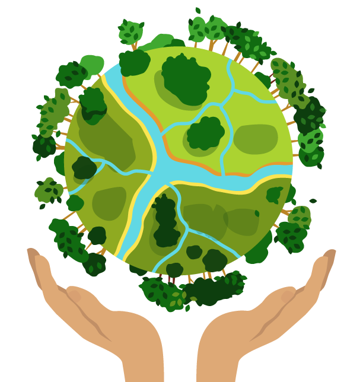

Essa é a área do turismo que trabalha em harmonia com a natureza e as comunidades que a circundam. Em outras palavras, podemos dizer que o turismo sustentável visa suprir as necessidades dos turistas e das regiões onde essa prática está se desenvolvendo, porém sem deixar a sustentabilidade de lado.
Dessa forma, é possível garantir melhores oportunidades para o futuro, otimizando a gestão de recursos de uma maneira que as necessidades sociais, econômicas e ambientais sejam satisfeitas, mantendo também a integridade cultural e a diversidade biológica.
Pela definição do Código Mundial de Ética do Turismo, essa vertente também pode ser definida da seguinte maneira: “turismo sustentável é o que relaciona as necessidades dos turistas e das regiões receptoras, protegendo e fortalecendo oportunidades para o futuro”.
Ainda segundo o código, o turismo sustentável “contempla a gestão dos recursos econômicos, sociais e necessidades estéticas, mantendo a integridade cultural, os processos ecológicos essenciais, a diversidade biológica e os sistemas de suporte à vida”.
Pode-se concluir, então, que essa atividade busca atender as necessidades do desenvolvimento turístico, agregando os anseios das regiões que são beneficiadas pelo turismo e estimulando o crescimento dessa atividade, sem deixar de lado a proteção do meio ambiente, especialmente em lugares incomuns que possuem recursos naturais raros.

Esse é um segmento que tem como objetivo principal atender os anseios de turistas e regiões receptoras, garantindo a proteção ambiental e, paralelamente, o desenvolvimento da atividade turística em conjunto com todos os envolvidos.
Isso implica na prática de ações economicamente viáveis, socialmente justas e ecologicamente corretas. O turismo deve ser realizado de maneira que preserve a natureza e sua biodiversidade, com atividades programadas para seguir esse intuito.
Além disso, os agentes envolvidos devem respeitar os limites de suas ações, sempre tendo como prioridade a conservação dos recursos naturais. Para que o turismo sustentável possa ser desenvolvido, é importante ter atenção a três fatores primordiais:
- Desenvolvimento de estruturas compatíveis com a preservação ambiental;
- Clareza aos clientes sobre como a atividade é realizada;
- Não adoção de práticas turísticas em massa.
Com esse planejamento, é possível buscar soluções que contribuam para a sustentabilidade, gerando benefícios não somente aos responsáveis pela prática do turismo, mas também a toda a comunidade envolvida nessa atividade.
Assim, o turismo pode ser realizado de modo que a sustentabilidade e o desenvolvimento econômico caminhem lado a lado, protegendo a natureza e incentivando a prática dessa atividade, que deixa de ser uma preocupação somente dos setores envolvidos nessa área.